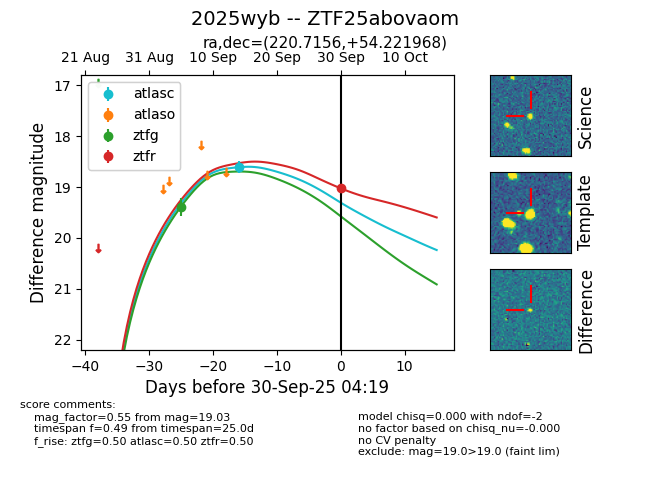
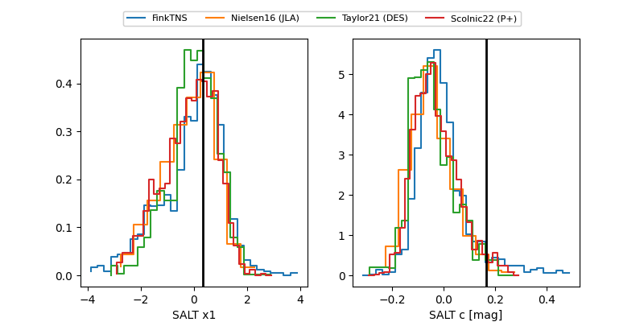

FINK: ZTF25abovaom
Lasair: ZTF25abovaom
ALeRCE: ZTF25abovaom
TNS: 2025wyb
YSE: 2025wyb
ZTF25abovaom (ztf,fink)
2025wyb (tns,yse)
equatorial (ra, dec) = (220.7156,+54.22197)
galactic (l, b) = (93.6089,+56.09557)


last atlasc=18.61, ztfg=19.39, ztfr=19.03
1 atlasc, 1 ztfg, 1 ztfr detections